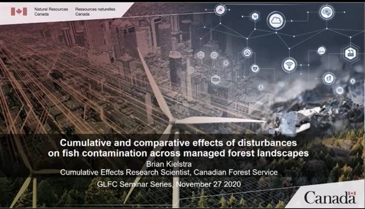

Cumulative and comparative effects of disturbances on fish contamination across managed forest landscapes

Image credit: GLFC Science
Date
Nov 27, 2020 8:00 AM
Location
Great Lakes Forestry Centre
Brian Kielstra
Cumulative Effects Research Scientist
I am a landscape/aquatic ecologist generally interested in the cumulative effects of landscape pattern and process on recipient waters